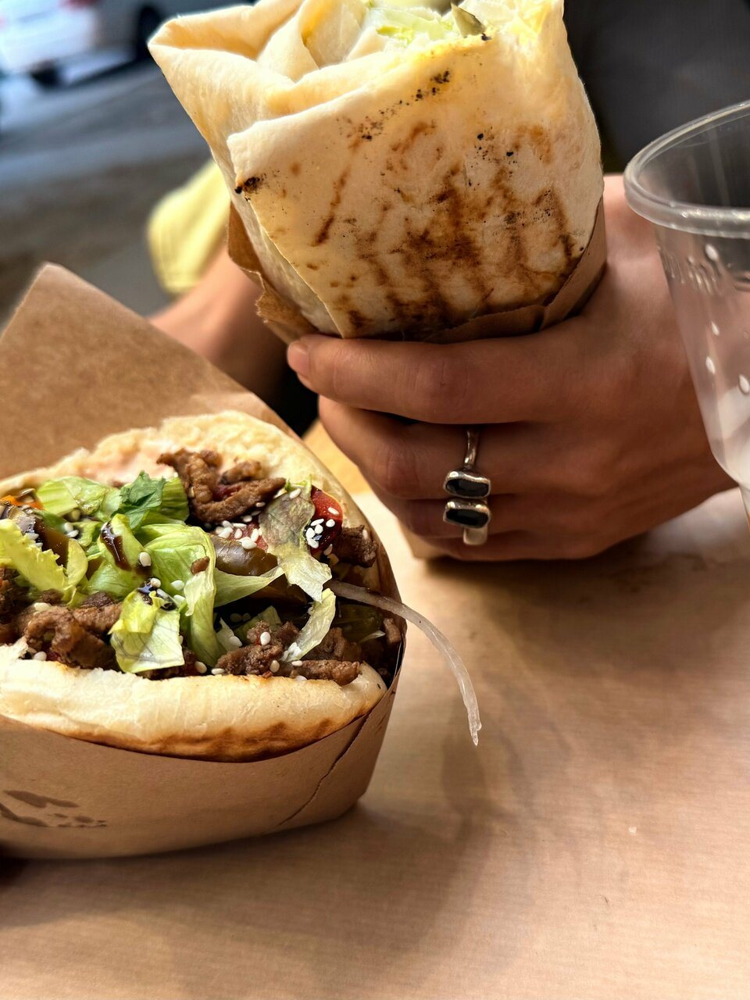
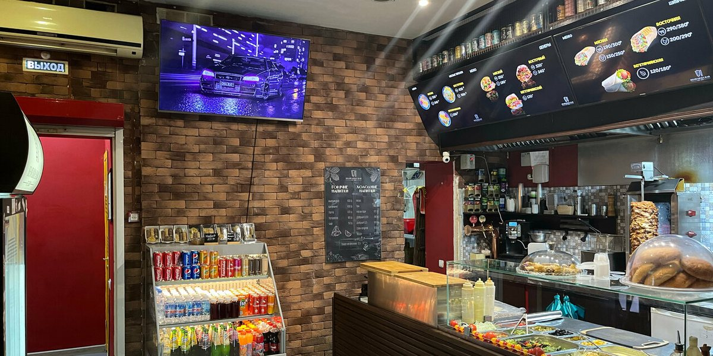
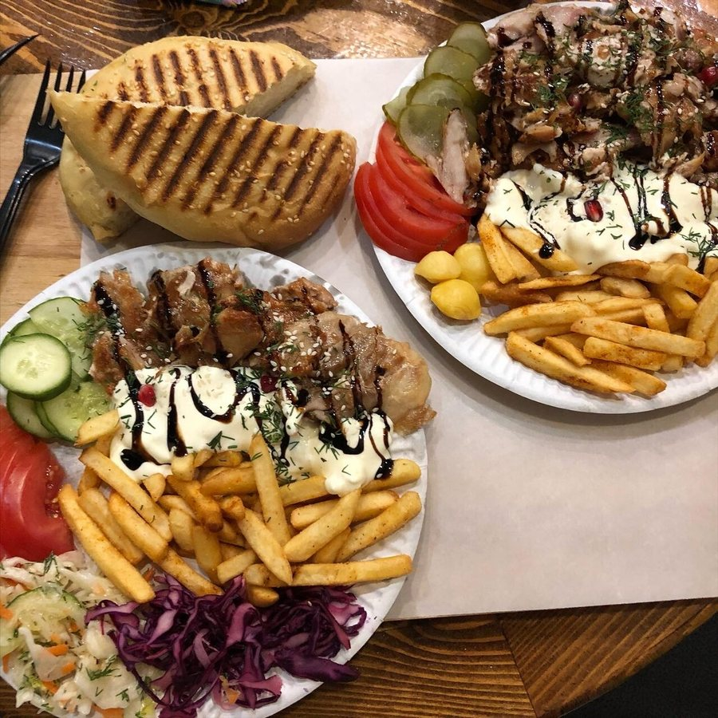
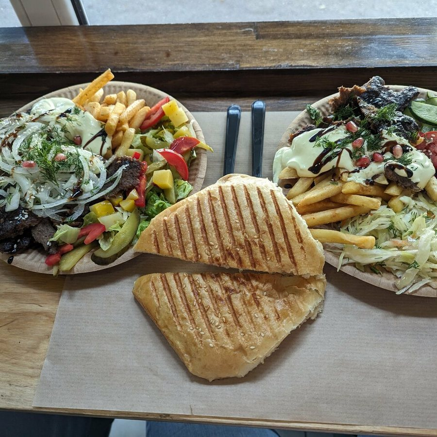
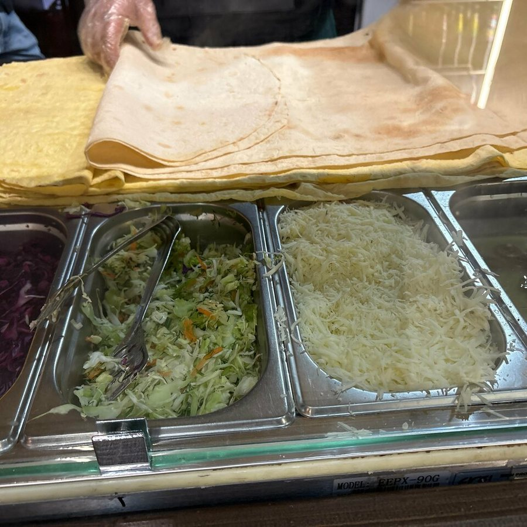
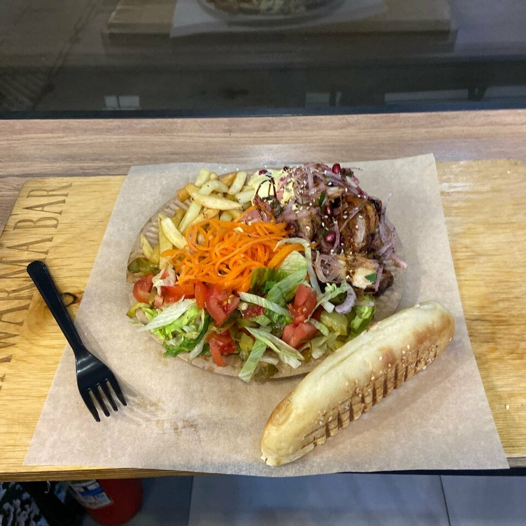
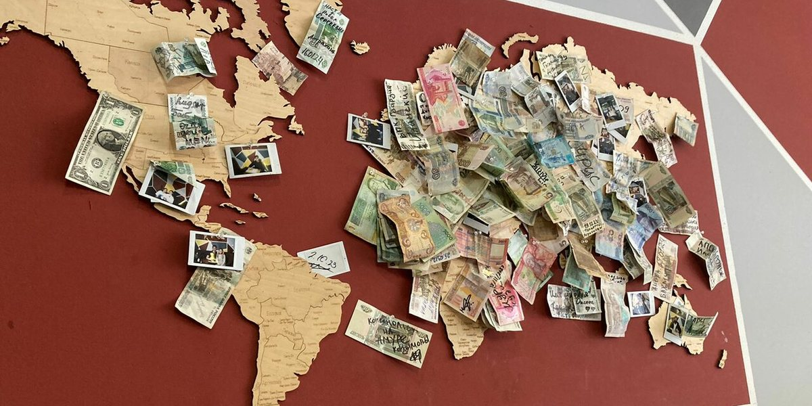
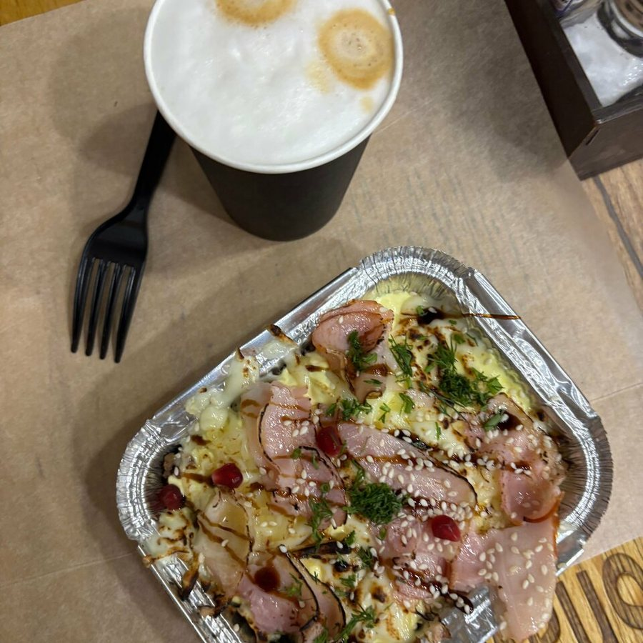
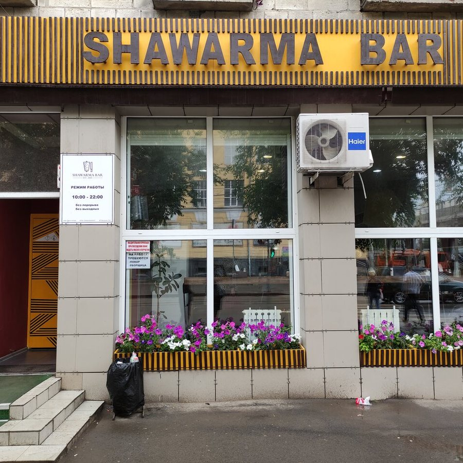

Волгоград · Комсомольская, 18 · ежедневно 10:00–22:00
Шаверма и донер на Комсомольской, 18
Shawarma Bar — восточный стритфуд в Волгограде: шаверма и донер (восточные, классические и вегетарианские), тарелки, боксы, «лодочка» и фалафель. Соусы на выбор, включая греческий йогуртовый собственного приготовления. 4,8 из 5 при 608 оценках в Яндекс Картах и награда «Хорошее место 2026»; в отзывах пишут, что заходят сюда и местные, и пассажиры во время стоянки поезда.
★★★★★4,8рейтинг в Яндекс Картах · 608 оценок · «Хорошее место 2026»
Ежедневно с 10:00 до 22:00, без перерыва и выходных

🍽 Бизнес-ланч — 260 ₽, в карточке отмечены и завтраки
🚚 Доставка (в карточке — Яндекс Еда), еда навынос и предзаказ онлайн
Состав бизнес-ланча и завтрака, а также наличие уточняйте по телефону
Коротко о месте
4,8 из 5 при 608 оценках в Яндекс Картах и награда «Хорошее место 2026». Самые обсуждаемые темы в отзывах — еда (329 упоминаний), шаверма (169) и мясо (159).
🥙Шаверма и донер
Восточные, классические и вегетарианские — а ещё тарелки, боксы и «лодочка». В меню карточки 27 позиций с ценами и граммовками.
🌱Есть вегетарианское
Вегетарианская шаверма и донер, тарелка с фалафелем, овощной бокс. Фалафель в меню описан как шарики из нута.
☕Напитки
Морс собственного приготовления, грузинские лимонады «Натахтари», кола. В карточке отмечено крафтовое пиво, а в зале есть отдельная доска горячих и холодных напитков — их цены на кассе.
🍽Бизнес-ланч и завтрак
В карточке заведения отмечены завтрак и бизнес-ланч за 260 ₽. Средний счёт — от 220 ₽, цены помечены как средние.
🗺Карта мира на стене
Деревянная карта мира в зале: по отзыву гостьи, на ней можно оставить послание или прикрепить что-то своё. На фото из карточки видны подписанные купюры и маленькие снимки.
🚪Зал и оплата
Вход с улицы, 3–5 столов в зале, в карточке отмечены спортивные трансляции. Оплата картой и наличными, посещение с животными разрешено, есть навынос и доставка.
Меню
Позиции, цены и граммовки — из меню в карточке Shawarma Bar в Яндекс Картах (выгрузка 10 августа 2026). Первый раздел открыт, остальные нажмите, чтобы развернуть.
Шаверма, донер и тарелки
14 позиций
Шаверма восточная, стандарт
300 ₽ / 350 г
Шаурма восточная, большая
450 ₽ / 600 г
Шаверма вегетарианская, стандарт
270 ₽ / 320 г
Шаверма вегетарианская, большая
350 ₽ / 420 г
Донер классический
350 ₽ / 420 г
Донер восточный
400 ₽ / 500 г
Донер вегетарианский
350 ₽ / 425 г
Лодочка
390 ₽ / 410 г
Тарелка классическая
380 ₽ / 460 г
Тарелка восточная
450 ₽ / 600 г
Тарелка с фалафелем
400 ₽ / 510 г
Бокс греческий
450 ₽ / 400 г
Бокс фри
400 ₽ / 350 г
Бокс овощной
400 ₽ / 330 г
Закуски
5 позиций
Картофель фри, макси
250 ₽ / 200 г
Картофель фри, стандарт
170 ₽ / 100 г
Картофельные дольки
170 ₽ / 150 г
Наггетсы
170 ₽ / 120 г
Фалафель
170 ₽ / 150 г
Шарики из нута
Напитки
4 позиции
Морс
150 ₽ / 500 мл
Смородина, клюква. Напиток собственного приготовления
«Натахтари»
200 ₽ / 500 мл
Грузинский лимонад в ассортименте: фейхоа, саперави, груша, тархун. При отсутствии вкуса — замена на тот, что в наличии
Cola M
160 ₽ / 500 мл
Напиток кола в ассортименте
Cola S
130 ₽ / 300 мл
Напиток кола в ассортименте
Кофе, чай и крафтовое пиво в меню карточки не значатся — они на доске напитков в зале, цены на кассе.
Соусы
4 позиции
Соус греческий
70 ₽ / 50 мл
Йогуртовый соус собственного приготовления
Соус чесночный
70 ₽ / 50 мл
Соус острый
70 ₽ / 50 мл
Соус сырный Heinz
80 ₽ / 50 мл
На гостевых фотографиях меню-борда из галереи той же карточки цены заметно ниже (шаверма восточная 290/380 ₽ с говядиной и 200/290 ₽ с курицей, картофель фри 190/130 ₽). Даты у этих снимков нет, поэтому здесь — цены из более свежей выгрузки карточки; актуальные уточняйте на кассе или по телефону.
Фото заведения
Фотографии из галереи карточки заведения в Яндекс Картах: зал, подачи, вход и деревянная карта мира на стене.








Отзывы гостей
Несколько отзывов из 366 в Яндекс Картах при средней оценке 4,8. Оценки разные: ниже — пять на 5 звёзд и один на 4 с претензией к ожиданию. Поправлены только опечатки, смысл не менялся.
Доля положительных упоминаний по темам, которые гости затрагивают чаще других:
Самая вкусная шаверма и самый вкусный кофе с самыми вкусными пирожными. Оказалась здесь случайно: выскочила из поезда, пока была стоянка, перекусить — и просто обалдела от качества еды! Спасибо вам, хорошие люди, за ваши продукты и старания!
Last Beer★★★★★
Очень уютное место с приветливым персоналом и чистотой вокруг. Столы протираются регулярно, диванчики, большие обзорные окна — всё в порядке. Порадовал работающий кондиционер после уличной жары и вокзальной суеты. Шаверма вкусная, с кавказским акцентом.
Владимир К.★★★★☆
Обычная вкусная шаурма за 300 рублей! С курицей! Но вот что разозлило, так это ожидание 25 минут, так ещё даже Wi-Fi нет. Сиди, смотри в окно, слюной давись… За это 4 звезды.
Не пожалеете о выборе! Советую восточную — любителям мяса. Перепробовал всё меню, всё очень вкусно и сытно, но остановился на восточной шаурме. Отзывчивый и приятный персонал, и, что немаловажно, есть выбор соусов без майонеза.
Алексей Б.★★★★★
Отличная вегетарианская шаверма с фалафелем. Десять минут ожидания, вкусно и сочно.
Волгоград, Комсомольская улица, 18. Вход с улицы, в зале 3–5 столов; есть навынос, предзаказ онлайн и доставка. На двери указан режим работы 10:00–22:00 без перерыва и выходных.